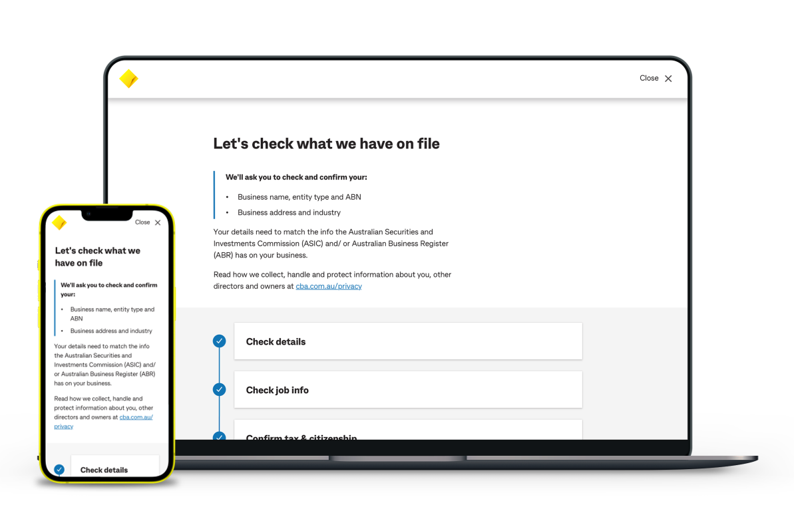
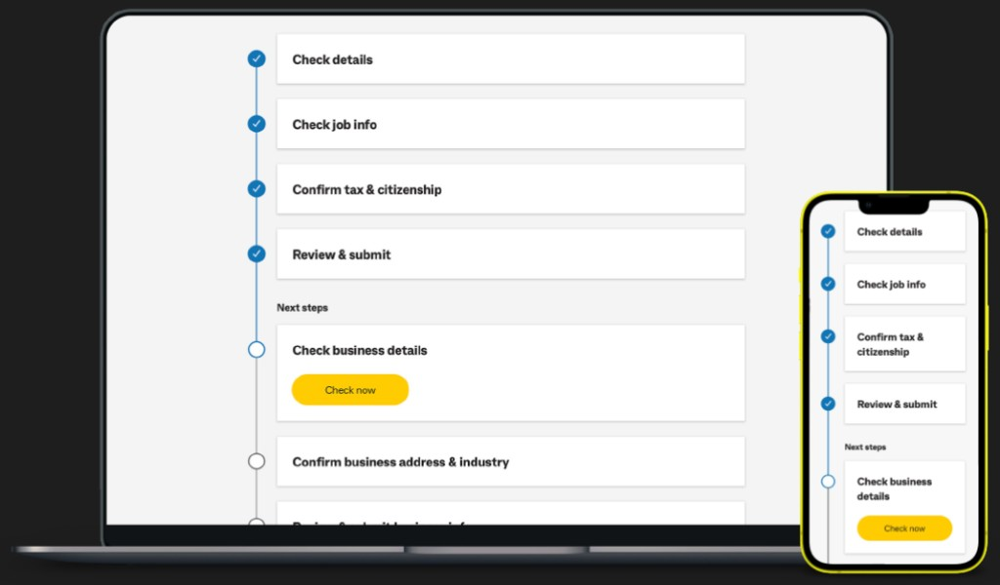

Enabling secure, self-serve identity verification at scale, and the introduction of Path, a reusable pattern that changed how CommBank designs complex journeys.

Case Study
CommBank is required to regularly review and update customer identity information to meet KYC regulatory obligations. Historically, this process often required customers to visit a branch, creating friction for customers and operational overhead for staff.
I worked as a Product Designer embedded within a cross-functional squad to design a self-serve digital KYC experience. A key outcome was the introduction of Path, a reusable interaction pattern designed to support complex, multi-step journeys, enabling customers to complete KYC in one or multiple sittings while maintaining clarity, control, and compliance.
The Mandate
KYC compliance is critical to CommBank's ability to provide customers with uninterrupted access to their banking services. Failure to complete KYC checks can result in account restrictions, creating frustration and eroding trust.
Customer research showed strong negative sentiment toward KYC, particularly when re-verification required branch visits. The opportunity was to shift KYC from a disruptive, branch-dependent process to a clear, self-serve digital experience that met regulatory obligations while reducing customer friction and operational load.
Defining the Space
Ownership
I owned the end-to-end customer experience for the digital KYC journey, partnering closely with Product Managers, Engineers, UX, and Content.
Strategic Foundation
Early on, we aligned on a set of principles to guide prioritisation. These principles directly informed the decision to introduce Path:
Break long regulatory journeys into clear, understandable steps.
Frame KYC as a reminder rather than a warning, using calm language and visual treatment.
Allow customers to leave and return without losing context or progress.
Create patterns that could scale beyond KYC to other complex journeys.
A Product Decision
As the KYC journey evolved, it became clear that traditional page-by-page flows were not suitable for long, compliance-heavy experiences.
Path was introduced as a structural solution to support complex journeys, providing a consistent way for customers to understand what's required, track progress, and complete tasks over time. It was designed as a reusable pattern that could scale beyond KYC to other multi-step journeys across the bank.
Path was implemented into CommBank's design system and adopted by other teams to support similar use cases.

Design Craft
Four pivotal decisions that shaped the experience and drove meaningful outcomes:
Regulatory language caused confusion in testing, so I pushed back using evidence and worked with Content and stakeholders to simplify terminology while remaining compliant.
Customers couldn't always finish KYC in one sitting, so I advocated for multi-session completion despite added technical complexity. A critical win for the user experience.
Alarmist language increased anxiety in testing. Copy and visual treatment were softened to encourage completion without reducing urgency. A delicate but critical balance.
KYC required many steps. I introduced Path to structure the flow and make the journey feel manageable, transforming a daunting task into a series of clear, achievable steps.
The System
Path supports long, compliance-driven journeys through four core capabilities, each addressing a real failure point identified in research.
Breaking the journey into clear, sequential steps so customers always know where they are and what comes next.
Showing customers what's complete and what remains, building confidence throughout the journey.
Allowing customers to pause and resume without losing progress, completing at their own pace.
Supporting both individual and business verification flows with flexible configuration.
Evidence-based Design
We tested the digital KYC experience with existing customers completing realistic verification scenarios. The research generated both confirmatory signals and critical insights that directly shaped the final design.
Oh the process was very easy! The only problem is that I rushed through without looking carefully.
The process was quite clear, I know exactly what I need to do and don't need assistance.
The process felt way too long, I felt quite frustrated if I'm being honest.
Outcomes
The digital KYC experience and the Path pattern delivered measurable value for customers, the bank, and the design practice.
Enabled CommBank to confidently scale digital KYC verification, removing the reliance on branch visits.
Established a repeatable approach for compliance-heavy flows, reducing future design and engineering overhead.
Path was adopted into CommBank's design system and picked up by other product teams across the organisation.
Reduced operational overhead for branch staff previously required to support customers through administrative verification.
Delivered
A complete digital KYC experience that met regulatory obligations, reduced friction, and introduced a lasting design pattern.